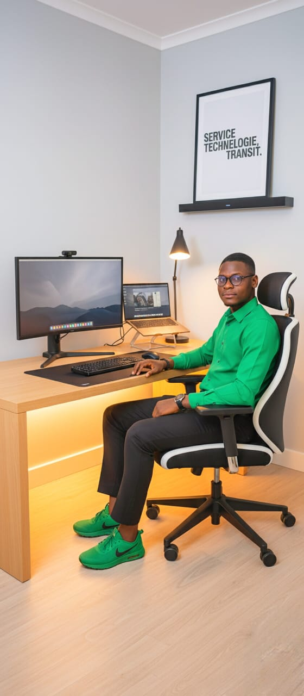

Mon parcours
Découvrez mes formations, mes expériences professionnelles, mes qualités et mes objectifs dans le domaine du numérique.
En savoir plusDéveloppeur Web et Mobile Junior
Basé à Lomé, je conçois et j’apprends à créer des solutions numériques utiles, accessibles et pensées pour leurs utilisateurs.

Explorez mon parcours, mes projets de formation, mes compétences et les possibilités de collaboration.
Découvrez mes formations, mes expériences professionnelles, mes qualités et mes objectifs dans le domaine du numérique.
En savoir plusDécouvrez mes projets pratiques de développement Web, les interfaces réalisées et les solutions que j’explore pendant mon apprentissage.
Voir mes projetsBasé à Lomé, je suis ouvert aux stages, aux postes juniors et aux collaborations sur des projets numériques au Togo et à l’international.
Prenons contactJe serais heureux d’échanger avec vous sur un stage, une collaboration ou la réalisation d’un site Web.